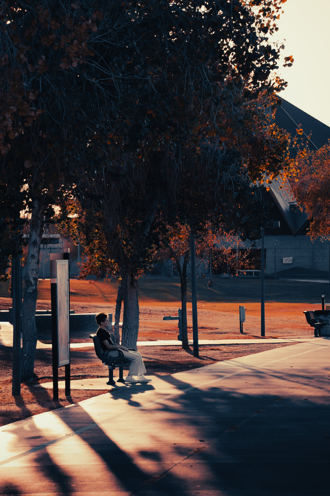
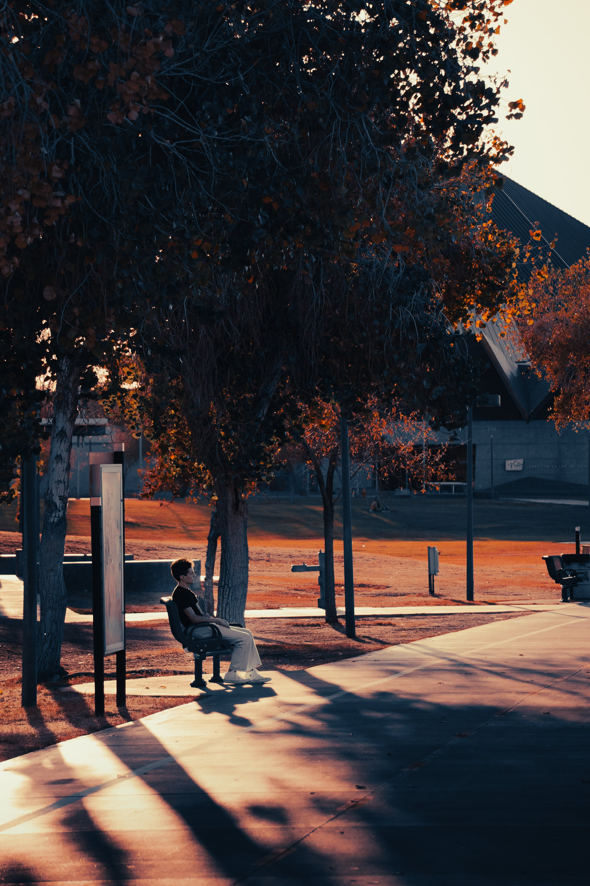
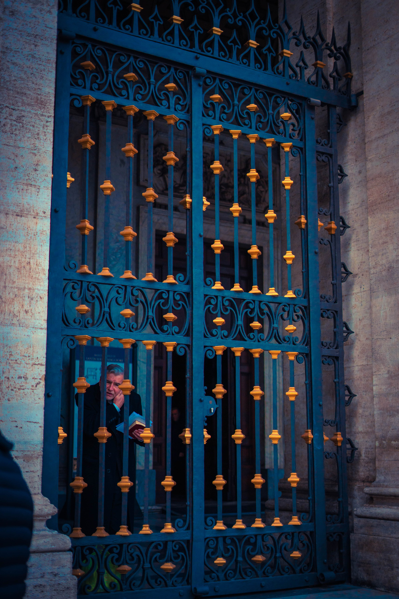
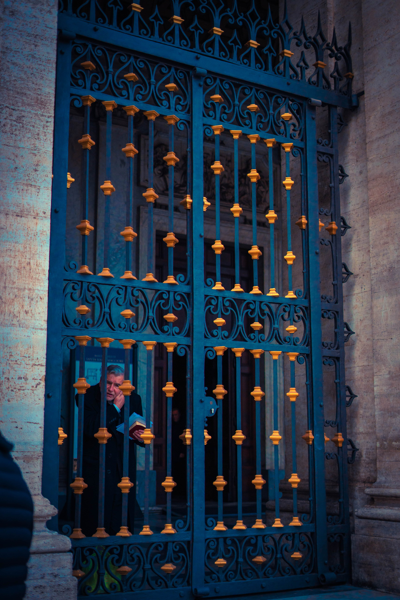

Portfolio
Compositional Pieces
Here are some examples of the Photoshop composition work I've done


Volcanic Stroll
 

Volcanic Stroll
Photography


 



Skills
- Logo Design
- Digital Imagery
- Website Graphics
- Photography Composition
- Production Layouts
- Digital Design
- Illustration
- Visual Design
- Image Manipulation
- Graphic Design
- Adobe Suite Mastery
- Dependable and Responsible
Work History
- School Yearbook Cover, Seattle, WA At Whitman Middle school in 8th grade, Blue Ridge Seattle, was the sole creator for the yearbook cover.
- Logo Designer
- Freelance, Seattle, WA
- Applied knowledge of production to create high-quality images.
- Built corporate brands by designing cohesive looks between elements.
- Designed website layouts, templates and unique branded looks.
- Developed print materials such as brochures, banners and signs.
- Babysitter
- Neighbor, Seattle, WA
- Communicated positively with children and guardians.
- Prepared healthy, age-appropriate snacks and meals.
- Assisted children with homework assignments and special projects across different subjects.
- Organized and cleaned home after activities by picking up toys and straightening up play room.
- Logo Redesign
-
- RE Trucking, Seattle, WA
- Developed creative design for print materials, banners and signs.
- Designed website layouts, templates and unique branded looks.
- Worked with clients to gather and define requirements, establish scopes and manage project milestones.
- Completed in-depth product design tests using updated software tools.
- Created digital image files for use in digital and traditional printing methods.
- Designed creative digital displays used in online advertising for local businesses.
- Applied knowledge of production to create high-quality images. Employed design fundamentals when selecting typography, composition, layout and color in design work.
- Built corporate brands by designing cohesive looks between elements. Used Photoshop to create images and layouts for multiple projects.
- Wedding Photo Editor
-
- Client, City of Los Angeles, CA
- Used Adobe Photoshop and Adobe Lightroom to crop, invert and control light and color properties of photos.
- Researched image libraries to locate appropriate photographs for stock use.
- Retouched skin blemishes and tattoos and removed unwanted images from objects with
Education
- High School Diploma - Christa McAuliffe Academy School of Arts and Sciences: Oregon (remote)
- Currently attending Arizona State University in my softmore year pursuing a bachelors in Graphic Information Technology
Interests
- Graphic Design
- Photography
- Art
- Music
- Design